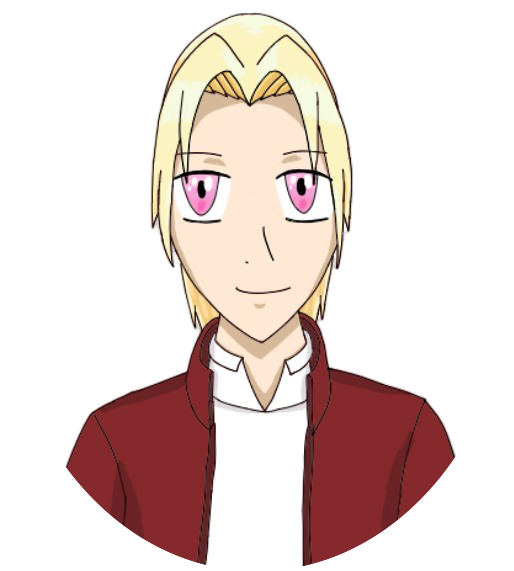
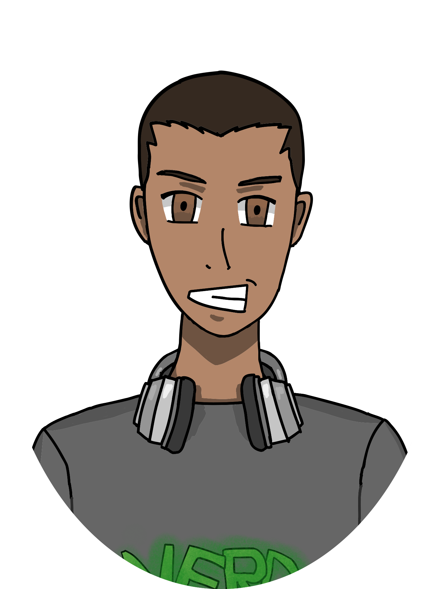
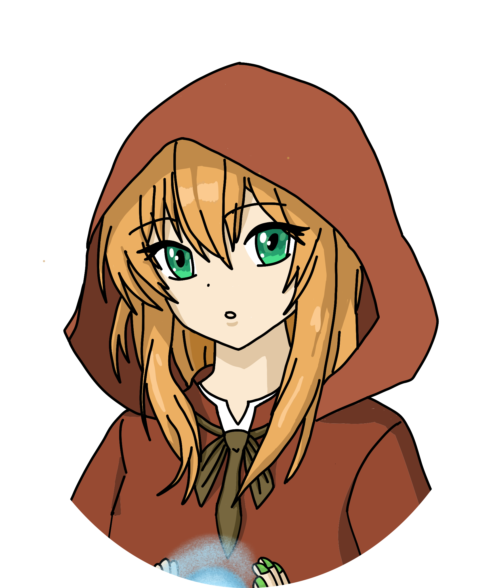
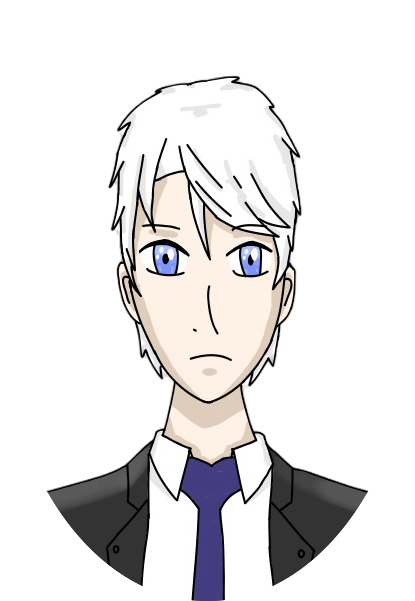
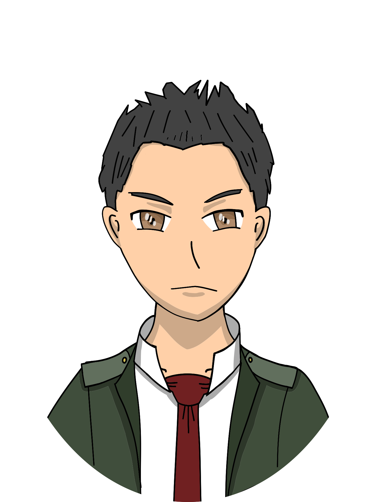
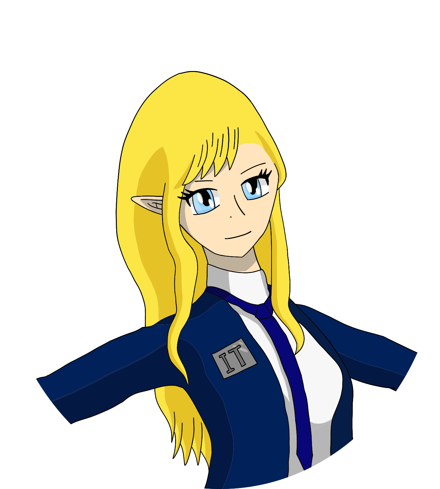
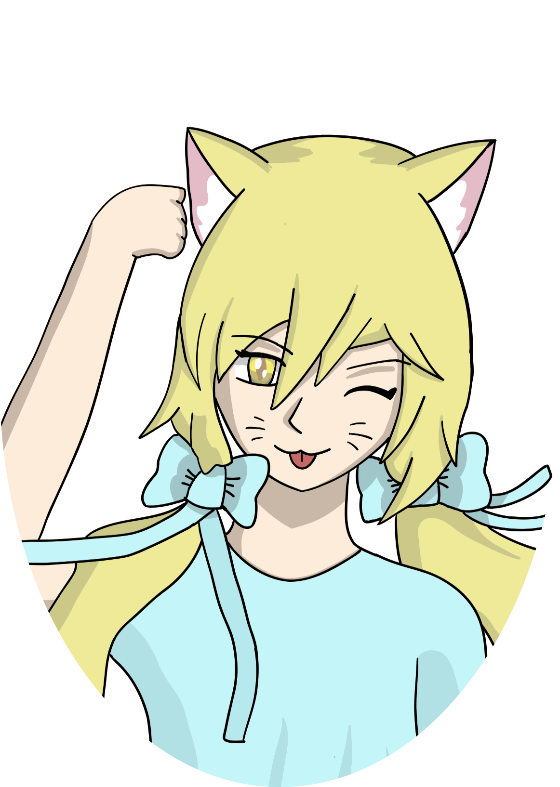
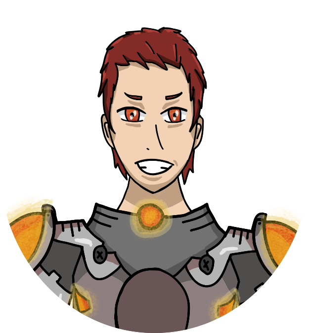

Meet the Characters

Avery Obtainia
A calm Angelor boy with angelic and light powers, guided by a quiet sense of purpose and healing energy.

A gifted Angelor demihuman and Regnum Academy student who wields light magic and the Compression Regnum Spei, catching the eye of the Tempest Aquia cohort. With the Seal Ring, Rune of the Spellcaster, he conceals his wings and channels the power of a mysterious entity, with whom he shares a spiritual bond.
" data-img="images/character_art/avery_obtainia_winged.png">
A laid-back yet driven Metalor student at Regnum Academy who excels in metal manipulation and runecrafting. His mastery allows him to forge magical metals and invent gadgets like hoverboards, earning him a place in the Dai-Battalion cohort.
" data-img="images/character_art/teddric_tech_full.png">
A shy Naiad demihuman and student of Regnum Academy with powerful water magic and exceptional mana reserves. Despite her timid nature, she proves herself a skilled combatant and loyal companion to her friends, even earning a spot in the Black Rampart cohort.
" data-img="images/character_art/river_grant_civilian.png">
A brilliant Icelorian prodigy, wielding powerful ice magic, including the ellusive Ice Travel. A technological genius and strategic leader, a founder of IT and the ITA, commands the Blue Legion cohort, and wields the transformative Seal Ring, the Icelorian Blade.
" data-img="images/character_art/kaden_icelander_full.png">
A powerful Magnivirigentis, known for his unusual purple mana-imbued strength magic. Muscular and towering, he works for IT Industries, serves as a trainer, and leads the IT Agency Task Force.
" data-img="images/character_art/amos_black_military.png">
An Elf Mystical Being and a key figure at IT Industries, serving as Head Secretary and lead of the IT Agency’s Intelligence Force. Skilled in Snow Magic, speed, and precision, she is a deadly assassin, close associate of Kaden Icelander, and the Mystical Legends group’s scout, known for her sharp mind, teasing personality, and strong work ethic.
" data-img="images/character_art/lucy_terner_full.png">
A cheerful Felior demihuman at Regnum Academy with golden hair, eyes, and cat features, who wields fast and powerful Lightning Magic. Armed with a versatile Seal Ring, Gathering Sickle, and sharp reflexes, she serves as the Mystical Legends group’s backline attacker, known for her playful teasing, kindness, and confident pride in her identity. Part of the Black Rampart cohort.
" data-img="images/character_art/kiara_katzol_full.png">
A cunning, power-hungry flame master and major antagonist who rules District 3 and seeks the Orb of Destruction to forcibly unify the Mystical Island under his rules. Transforming into a powerful living flame at Tier 5 by the orb, he is recognized for his fiery hair and eyes, extraordinary combat skills, and his inferno magic, said to be even hotter than regular fire.
" data-img="images/character_art/pyrus_bourn_full.png">